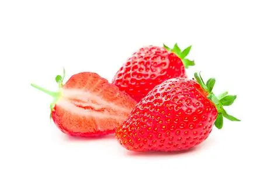
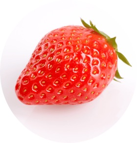
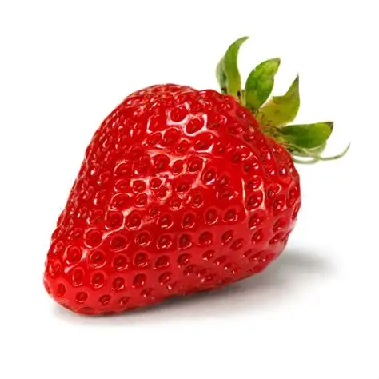

Bienvenue dans l'univers des fraises
Découvrez tout ce que vous avez toujours voulu savoir sur ce fruit rouge délicieux et irrésistible
Les différentes variétés de fraises
Il existe de nombreuses variétés de fraises, parmi les quelles :
- La gariguette, petite et allongée, très parfumée.
- La mariquette, très sucrée et juteuse.
- La cléry, très grosse et très sucrée.
Les tailles des fraises selon les variétés
- La gariguette mesure entre 2 et 3 cm de long. 
- La mariguette mesure entre 3 et 4 cm de long. 
- La cléry mesure entre 4 et 5 cm de long 